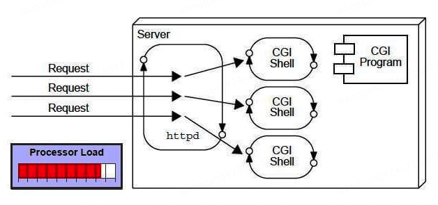

JavaWeb开发基础Servlet简介¶

Servlet是什么？¶
现在的Java Web开发，很少直接接触到Servlet。在Spring项目中，Spring Boot基于Spring Framework，简化了Spring应用程序开发，Spring Framework是一个全面的Java应用程序框架，其中包含Spring MVC模块，Spring MVC封装了Servlet，以实现Web功能。Servlet不属于Spirng项目，而是Java EE（后改名为Jakarta EE）的一部分。
Oracle将Java EE（Java SE还自己保留）交给开源组织，Eclipse基金会接手。但Oracle不允许开源组织使用Java名号，所以Jakarta EE名称于2018.02.26应运而生。
Servlet可以有很多种描述：
Servlet是一个技术，用来创建Web应用程序
Servlet是一个API，提供了很多接口、类和文档
Servlet是一个接口，必须实现该接口来创建Servlet
Servlet是一个类，位于服务端，接收请求，返回响应
Servlet是一个Web组件，用来创建动态Web页面
CGI与Servlet¶
在Servlet技术出现以前，Web应用程序是通过CGI（Common Gateway Interface），一种脚本语言，来实现的。

但是CGI存在很多缺点：
如果客户端增多，服务端响应会变慢
对于每个请求，CGI都会创建一个进程，进程数有限
依赖C、C++、perl等编程语言
Servlet技术出现以后，解决了很多CGI问题：
性能：每个请求创建一个线程，而不是进程
可移植性：因为使用了Java语言
健壮性：JVM管理Servlet，无需关心内存泄漏、垃圾回收等
安全性：因为使用了Java语言
总的来说，Servlet是Server Applet，服务端小程序。它是单例多线程的，每个Servlet类在Web容器中只有一个实例，每次客户端请求，Web Server都会从线程池中分配一个线程去创建Servlet，每个请求由一个独立的线程处理，这些线程共享同一个Servlet实例，通过HTTP协议接收和响应来自Web Client的请求。